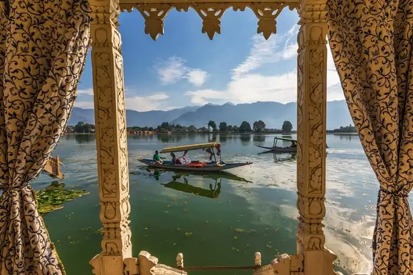
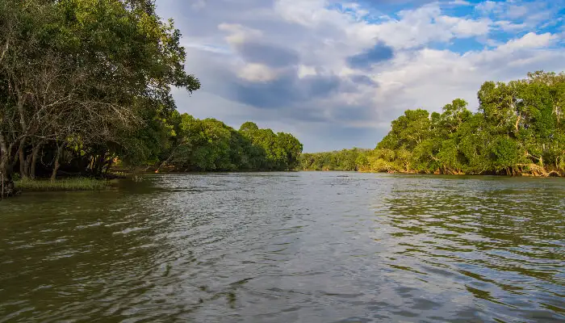

This is a world heritage site, Ziro - a paradise for the peace seekers - ranks on the top of our
list of best places to visit in India in September. The quaint town of Arunachal Pradesh is known for
its
balmy climate, unique Apa Tani tribal group, pine hills, paddy fields, and Ziro Festival.
Places to visit: Talley Valley Wildlife Sanctuary, Pine Grove, Meghna Cave Temple
and Ziro Puto
Things to do: Ziro Festival, Trekking At Midey and Camping
Ways to reach:
By Air: Tezpur (144 km away) is the nearest airport.
By Road: Tezpur is also the nearest railway head.
Srinagar - Jammu and Kashmir

Come here if you want to witness a true 'Paradise on Earth'. For those planning a holiday in India this
September, there are many places to visit in Kashmir. And Srinagar is the best among them. The city has
enjoyed importance since historic times. And its Shikara rides, floating gardens, and serene beauty
continue
to interest tourists even today.
Places to visit: Gulmarg, Nishat Bagh, Jama Masjid, Pahalgam and Hazratbal Mosque
Things to do: Shikara Rides on Dal Lake, Bird Watching at Hokersar, Visit The Dachigam
National Park, Explore The Floating Markets and Visit Sonmarg
Ways to reach:
By Air: Srinagar has its own airport.
By Road: Udhampur Railway Station, located 229 km from Srinagar, is the nearest
railway
head. Srinagar Railway Station is under construction.
Dubare - Karnataka

A popular hilly terrain and backwaters in Karnataka known for elephants. Tourists from all over India
visit
here to enjoy the elephant training camp. You can see, learn and involve in various activities conducted
by
them for an unforgettable experience. A natural island nestled by the Cauvery river, forest and wildlife
and
adventure activities, Dubare is an experience that you shouldn't miss.
Places to visit: Dubare Elephant Camp, Nisargadhama, Activities, Veerabhoomi, Harangi
Dam
Things to do: Involve in an elephant camp, boating, shopping, outdoor activities
Ways to reach:
By Air: Mangalore Airport is just 180 km away.
By Road: Mysore Railway Station - 100 km away from Dubare